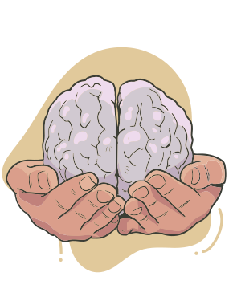

Na saúde mental, evita-se o termo doença, sendo preferido o termo mais amplo transtorno, uma vez que as alterações mentais e de comportamento não possuem um fator etiológico único, além de apresentarem fisiopatogenia ou substrato biológico pouco conhecidos. Certamente, há um consenso de que transtornos psiquiátricos resultam de múltiplas inter-relações entre fatores biológicos, psicológicos e sociais. Estes fatores estão relacionados ao grande e crescente número de pessoas vivendo com problemas de saúde mental. Envelhecimento populacional sem políticas públicas voltadas a esse nicho, desemprego, violência, trânsito, poluição sonora e luminosa, alimentação de má qualidade, sedentarismo e hiperconectividade na vida profissional e social são fatores implicados. A pandemia da covid-19, com traumas, perdas e lutos coletivos, agravou esse problema em todo o mundo.
